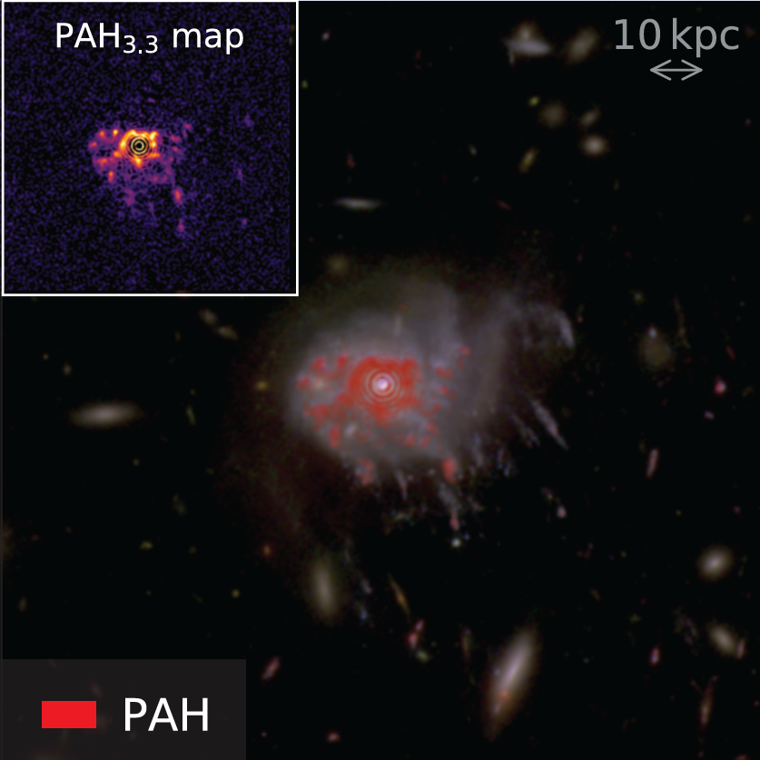
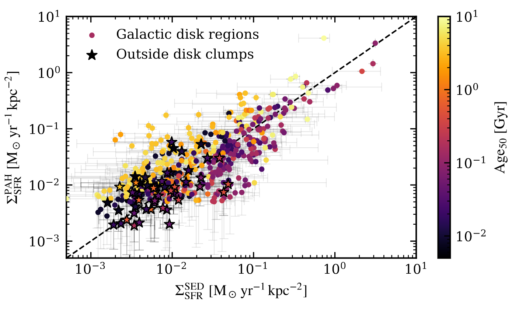

POSTER


PAH Emission and Age Properties of Ram Pressure Stripped Galaxies at z~0.3
- Detection of age gradients in the ram pressure stripped tails of galaxies at z~0.3, consistent with the Fireball model — observed for the first time beyond the local Universe.
- Strong PAH emission detected in star-forming clumps of ram pressure stripped galaxies, suggesting that PAH molecules may be stripped along with the atomic gas.